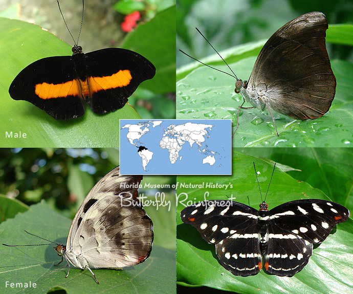
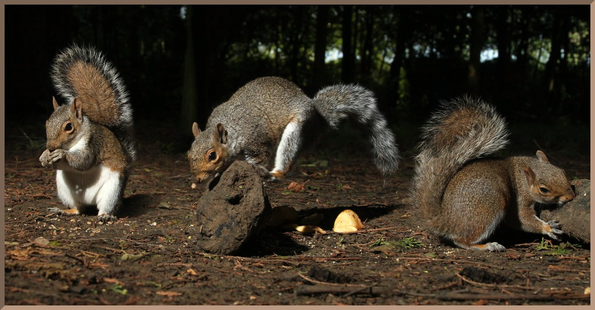

Inference With A Custom Model¶
We have trained and evaluated the model, the next step is to see the performance of the model on unknown images. We are going to test the model on the classes we have trained it on. If you have not download the trained model, download it from here.
sample1.jpg
import pixellib
from pixellib.instance import custom_segmentation
segment_image = custom_segmentation()
segment_image.inferConfig(num_classes= 2, class_names= ["BG", "butterfly", "squirrel"])
segment_image.load_model("mask_rcnn_models/Nature_model_resnet101.h5")
segment_image.segmentImage("sample1.jpg", show_bboxes=True, output_image_name="sample_out.jpg")
import pixellib
from pixellib.instance import custom_segmentation
segment_image =custom_segmentation()
segment_image.inferConfig(num_classes= 2, class_names= ["BG", "butterfly", "squirrel"])
We imported the class custom_segmentation, the class for performing inference and created an instance of the class. We called the model configuration and introduced an extra parameter class_names.
class_names= ["BG", "butterfly", "squirrel"])
class_names: It is a list containing the names of classes the model is trained with.Butterfly has the class id 1 and squirrel has the class id 2 “BG”, it refers to the background of the image, it is the first class and must be available along the names of the classes.
Note: If you have multiple classes and you are confused of how to arrange the classes’s names according to their class ids, in your test.json in the dataset’s folder check the categories’ list.
{
"images": [
{
"height": 205,
"width": 246,
"id": 1,
"file_name": "C:\\Users\\olafe\\Documents\\Ayoola\\PIXELLIB\\Final\\Nature\\test\\butterfly (1).png"
},
],
"categories": [
{
"supercategory": "butterfly",
"id": 1,
"name": "butterfly"
},
{
"supercategory": "squirrel",
"id": 2,
"name": "squirrel"
}
],
You can observe from the sample of the directory of test.json above, after the images’s list in your test.json is object categories’s list, the classes’s names are there with their corresponding class ids. Remember the first id “0” is kept in reserve for the background.
segment_image.load_model("mask_rcnn_model/Nature_model_resnet101.h5)
segment_image.segmentImage("sample1.jpg", show_bboxes=True, output_image_name="sample_out.jpg")
The custom model is loaded and we called the function to segment the image.

sample2.jpg
test_maskrcnn.segmentImage("sample2.jpg",show_bboxes = True, output_image_name="sample_out.jpg")

WOW! We have successfully trained a custom model for performing instance segmentation and object detection on butterflies and squirrels.
Extraction of Segmented Objects
PixelLib now makes it possible to extract each of the segmented objects in an image and save each of the object extracted as a separate image. This is the modified code below;
import pixellib
from pixellib.instance import custom_segmentation
segment_image = custom_segmentation()
segment_image.inferConfig(num_classes= 2, class_names= ["BG", "butterfly", "squirrel"])
segment_image.load_model("mask_rcnn_model/Nature_model_resnet101.h5")
segment_image.segmentImage("sample2.jpg", show_bboxes=True, output_image_name="output.jpg",
extract_segmented_objects= True, save_extracted_objects=True)
We introduced new parameters in the segmentImage function which are:
extract_segmented_objects: This parameter handles the extraction of each of the segmented object in the image.
save_extracted_objects: This parameter saves each of the extracted object as a separate image.Each of the object extracted in the image would be save with the name segmented_object with the corresponding index number such as segmented_object_1.
These are the objects extracted from the image above.


Specialised uses of PixelLib may require you to return the array of the segmentation’s output.
Obtain the following arrays:
-Detected Objects’ arrays
-Objects’ corresponding class_ids’ arrays
-Segmentation masks’ arrays
-Output’s array
By using this code
segmask, output = segment_image.segmentImage()
You can test the code for obtaining arrays and print out the shape of the output by modifying the instance segmentation code below.
import pixellib
from pixellib.instance import custom_segmentation
segment_image = custom_segmentation()
segment_image.inferConfig(num_classes= 2, class_names= ["BG", "butterfly", "squirrel"])
segment_image.load_model("mask_rcnn_model/Nature_model_resnet101.h5")
segmask, output = segment_image.segmentImage("sample2.jpg")
cv2.imwrite("img.jpg", output)
print(output.shape)
Obtain arrays of segmentation with bounding boxes by including the parameter show_bboxes.
segmask, output = segment_image.segmentImage(show_bboxes = True)
Full code
import pixellib
from pixellib.instance import custom_segmentation
segment_image = custom_segmentation()
segment_image.inferConfig(num_classes= 2, class_names= ["BG", "butterfly", "squirrel"])
segment_image.load_model("mask_rcnn_model/Nature_model_resnet101.h5")
segmask, output = segment_image.segmentImage("sample2.jpg", show_bboxes= True)
cv2.imwrite("img.jpg", output)
print(output.shape)
Note:
Access mask’s values using segmask[‘masks’], bounding box coordinates using segmask[‘rois’], class ids using segmask[‘class_ids’].
segmask, output = segment_image.segmentImage(show_bboxes = True, extract_segmented_objects= True )
Access the value of the extracted and croped segmented object using segmask[‘extracted_objects’]
Video segmentation with a custom model.
sample_video1
We want to perform segmentation on the butterflies in this video.
import pixellib
from pixellib.instance import custom_segmentation
test_video = custom_segmentation()
test_video.inferConfig(num_classes= 2, class_names=["BG", "butterfly", "squirrel"])
test_video.load_model("Nature_model_resnet101")
test_video.process_video("sample_video1.mp4", show_bboxes = True, output_video_name="video_out.mp4", frames_per_second=15)
test_video.process_video("video.mp4", show_bboxes = True, output_video_name="video_out.mp4", frames_per_second=15)
The function process_video is called to perform segmentation on objects in a video.
It takes the following parameters:-
video_path: this is the path to the video file we want to segment.
frames_per_second: this is the parameter used to set the number of frames per second for the saved video file. In this case it is set to 15 i.e the saved video file will have 15 frames per second.
output_video_name: this is the name of the saved segmented video. The output video will be saved in your current working directory.
Output_video
A sample of another segmented video with our custom model.
Extraction of Segmented Objects in Videos¶
segment_video.process_video("sample.mp4", show_bboxes=True, extract_segmented_objects=True,save_extracted_objects=True, frames_per_second= 5, output_video_name="output.mp4")
It still the same code except we introduced new parameters in the process_video which are:
extract_segmented_objects: this is the parameter that tells the function to extract the objects segmented in the image. It is set to true.
save_extracted_objects: this is an optional parameter for saving the extracted segmented objects.
Extracted objects from the video


You can perform live camera segmentation with your custom model making use of this code:
import pixellib
from pixellib.instance import custom_segmentation
import cv2
capture = cv2.VideoCapture(0)
segment_camera = custom_segmentation()
segment_camera.inferConfig(num_classes=2, class_names=["BG", "butterfly", "squirrel"])
segment_camera.load_model("Nature_model_resnet101.h5")
segment_camera.process_camera(capture, frames_per_second= 10, output_video_name="output_video.mp4", show_frames= True,
frame_name= "frame", check_fps = True)
You will replace the process_video funtion with process_camera function.In the function, we replaced the video’s filepath to capture i.e we are processing a stream of frames captured by the camera instead of a video file. We added extra parameters for the purpose of showing the camera frames:
show_frames: this parameter handles the showing of segmented camera’s frames.
frame_name: this is the name given to the shown camera’s frame.
check_fps: You may want to check the number of frames processed, just set the parameter check_fps is true. It will print out the number of frames processed per second.
Full code for object extraction in camera feeds Using A Custom Model
import pixellib
from pixellib.instance import custom_segmentation
import cv2
capture = cv2.VideoCapture(0)
segment_frame = custom_segmentation()
segment_frame.inferConfig(num_classes=2, class_names=['BG', 'butterfly', 'squirrel'])
segment_frame.load_model("Nature_model_resnet101.h5")
segment_frame.process_camera(capture, show_bboxes=True, show_frames=True, extract_segmented_objects=True,
save_extracted_objects=True,frame_name="frame", frames_per_second=5, output_video_name="output.mp4")
Process opencv’s frames
import pixellib
from pixellib.instance import custom_segmentation
import cv2
segment_frame = custom_segmentation()
segment_frame.inferConfig(network_backbone="resnet101", num_classes=2, class_names=["BG", "butterfly", "squirrel"])
segment_frame.load_model("Nature_model_resnet101.h5")
capture = cv2.VideoCapture(0)
while True:
ret, frame = capture.read()
segment_frame.segmentFrame(frame)
cv2.imshow("frame", frame)
if cv2.waitKey(25) & 0xff == ord('q'):
break